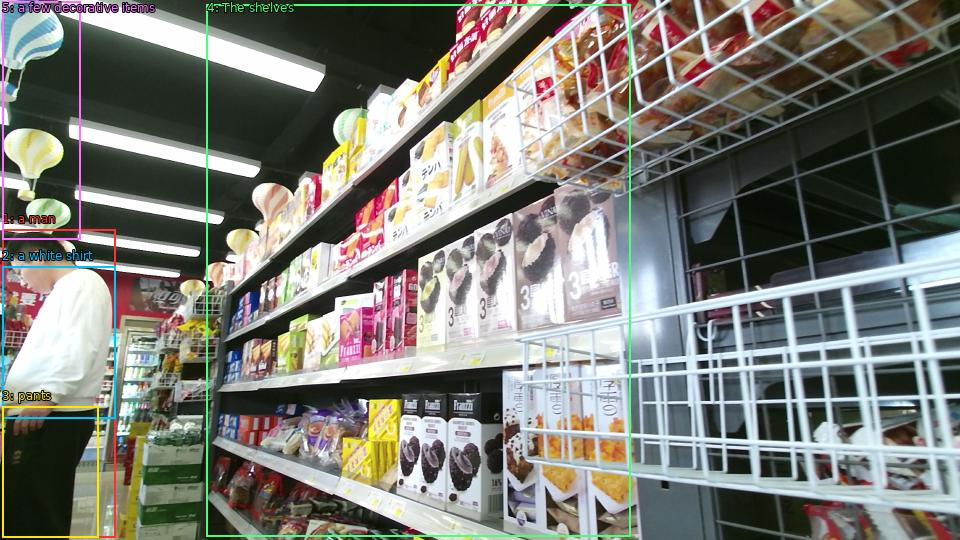

The image shows the interior of a supermarket aisle with shelves stocked with various food items. On the left side of the image, there is a man wearing a white shirt and black pants, standing in front of the shelves. He appears to be looking at the items on the shelves, which are arranged in a neat and orderly manner. The shelves are filled with different types of food, including snacks, drinks, and other grocery items. There are also a few decorative items hanging from the ceiling, including paper lanterns. The overall atmosphere of the store is bright and colorful.

Original · Caption raw · Grounding raw · Koordinate
Številke so lokalni ID regije. Dolge slikovne oznake so skrajšane; spodaj so celotne fraze. Napovedane regije se lahko prekrivajo ali opisujejo skupine.
| ID | Celotna fraza | bbox xyxy |
|---|---|---|
| 1 | a man | [2.3999998569488525, 229.23001098632812, 115.68000030517578, 537.030029296875] |
| 2 | a white shirt | [2.3999998569488525, 266.4900207519531, 115.68000030517578, 418.2300109863281] |
| 3 | pants | [2.3999998569488525, 406.3500061035156, 98.4000015258789, 537.5700073242188] |
| 4 | The shelves | [206.87998962402344, 4.590000152587891, 630.239990234375, 536.4900512695312] |
| 5 | a few decorative items | [2.3999998569488525, 1.8900001049041748, 80.15999603271484, 239.49000549316406] |